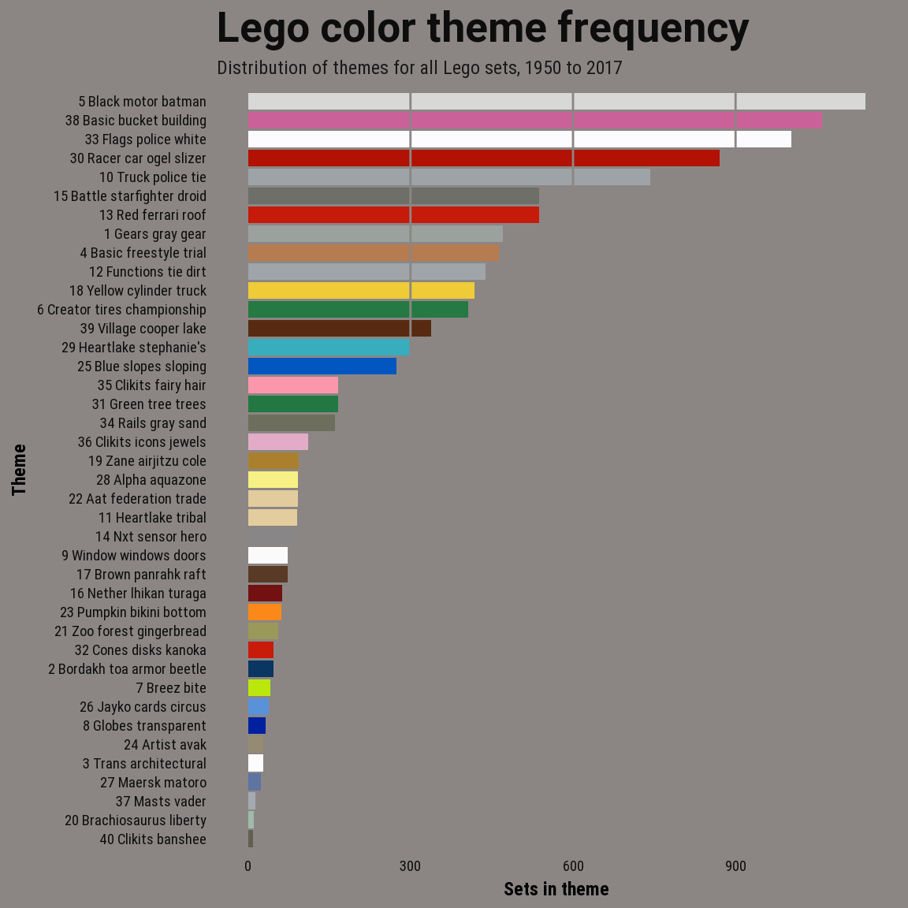
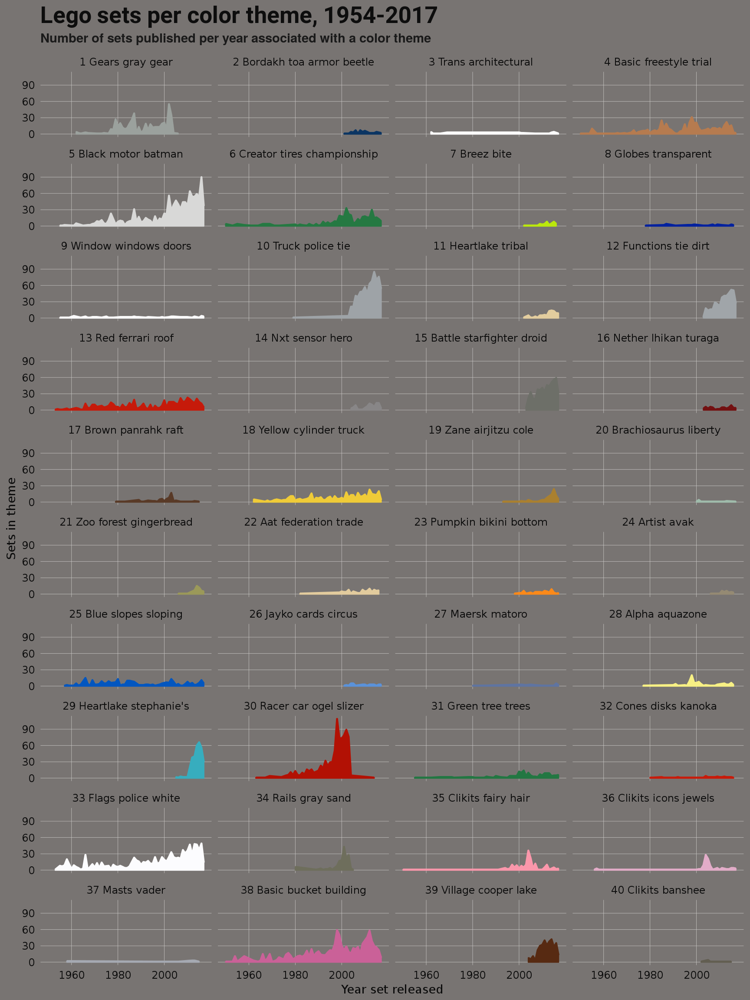

So finally we’ll settle on the topic model with 30 topics and look at a couple of summaries based on that topic.
devtools::load_all()
knitr::read_chunk(here::here("code", "final-model-plots.R"))library(dplyr)
library(ggplot2)
# Set model num. Models: 20, 30, 40, 50, 60, 75, 100
create_tables(sample_data = FALSE)Loading table 'set_colors'Connecting to database
Assigning themes to theme_df
Assigning sets to sets_df
Retrieving dataset form db
Disconnecting from database
Assigning full set set inventories to 'set_colors'
Assigning values to total_words
Assigning tidy set and color dataframe to 'set_words'
Creating sparse document term matrix (tm-package) and assigning to 'dtm' lda_models <- get_lda_models()
model_num = 3
topic_num = get_topic_numbers(lda_models)[model_num]
# Label sets by top topic probability
lda_clust <- get_lda_clusters(lda_models)
set_num <- names(lda_clust[model_num, ]$clust[[1]])
set_clust <- tidyr::unnest(lda_clust, clust) %>% mutate(topic_id = clust) %>%
filter(k == 40) %>% mutate(set_num = set_num) %>% left_join(sets_df) %>%
arrange(topic_id) %>% mutate(topic_id = forcats::fct_inorder(factor(topic_id)))
topic_pal <- topic_palette()
# Get count per topic
set_clust <- set_clust %>% count(topic_id) %>% arrange(n)
tpnames <- get_topic_names(lda_models[[model_num]])
tpnames <- tpnames %>% mutate(topic = factor(topic))
# Change palette names to match topic names
names(topic_pal) <- tpnames$topic_name
set_clust <- set_clust %>% left_join(tpnames, by = c(topic_id = "topic"))
# plot
bgcol = "#787472"
gg <- set_clust %>% ggplot(aes(x = reorder(topic_name, n), y = n, fill = topic_name,
group = topic_name))
gg <- gg + geom_col(size = 0.8)
gg <- gg + geom_hline(yintercept = c(300, 600, 900), size = 0.5, col = bgcol)
gg <- gg + scale_fill_manual(values = topic_pal)
gg <- gg + scale_y_continuous(breaks = c(300, 600, 900))
gg <- gg + labs(x = "Topic number", y = "Sets in topic", subtitle = "Distribution of topics for all Lego sets, 1950 to 2017",
title = "Lego Color topic frequency")
gg <- gg + theme_waff()
gg <- gg + coord_flip()
gg <- gg + theme_dark_bar(bgcol = bgcol)
gg <- gg + theme(legend.position = "none")
gg <- gg + theme(axis.text = element_text(family = "Open Sans", color = "gray5",
face = "bold", size = 9))
gg <- gg + theme(plot.subtitle = element_text(family = "Roboto Condensed", color = "gray10",
face = "bold", size = 11))
gg
model_num = 3
topic_num = get_topic_numbers(lda_models)[model_num]
# Assumes topic_pal is available
lda_clust <- lda_clust <- get_lda_clusters(lda_models)
# Model with 50 clusters
set_clust <- tidyr::unnest(lda_clust, clust) %>%
mutate(topic_id = clust) %>%
filter(k == topic_num) %>%
mutate(set_num = set_num) %>%
left_join(sets_df) %>%
arrange(topic_id) %>%
mutate(topic_id = forcats::fct_inorder(factor(topic_id)))
topic_pal <- topic_palette()
tpnames <- get_topic_names(lda_models[[model_num]])
tpnames <- tpnames %>% mutate(topic = factor(topic))
# Change palette names to match topic names
names(topic_pal) <- tpnames$topic_name
set_clust <- set_clust %>%
left_join(tpnames, by = c("topic_id" = "topic")) %>%
mutate(topic_name = forcats::fct_inorder(topic_name))
# Get count by year and topic
set_clust %>%
group_by(topic_name, year) %>%
count(topic_id) %>%
ggplot(aes(x = year, y = n,
group = topic_name,
color = topic_name)) +
geom_line(aes(color = factor(topic_name)), size = 0.8) +
geom_area(aes(fill = topic_name), alpha = 1) +
scale_color_manual(values = topic_pal) +
scale_fill_manual(values = topic_pal) +
scale_x_continuous(breaks = c(1960, 1980, 2000)) +
labs(x = "Year set released",
y = "Sets in theme",
subtitle = "Number of sets published per year associated with a color theme",
title = "Lego sets per color theme, 1954-2017") +
facet_wrap(~topic_name, nrow = 10) +
theme_scatter(bgcol = bgcol, grid_col = "#c8c6c4") +
theme(
plot.title = element_text(
family = "Roboto",
size = 20,
face = "bold",
color = "gray5"
),
plot.subtitle = element_text(
color = "gray10",
face = "bold",
size = 11
),
strip.text = element_text(
family = "Open Sans",
face = "plain",
size = 9,
color = "gray5"
),
axis.title = element_text(
family = "Opens Sans",
# face = "bold",
size = 10,
color = "gray5"
),
axis.text = element_text(
family = "Open Sans",
# face = "bold",
size = 9,
color = "gray5"
)) +
theme(legend.position = "none")
knitr::read_chunk(here::here("code", "final-model-grid.R"))